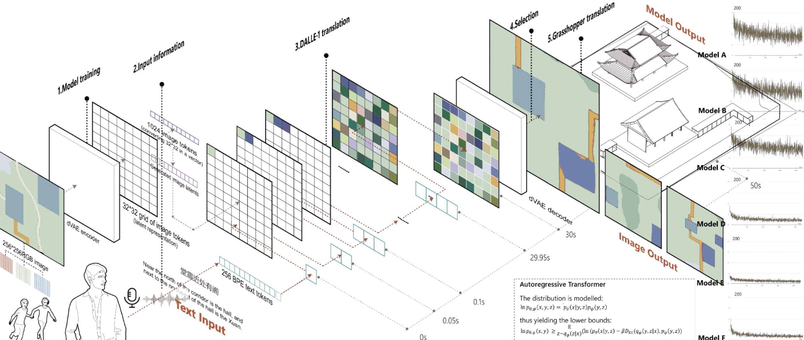

Siqi Zhang
Table of Contents
1 – Systems
Featured Image
City Color System
What is the system?
The system of city colors, shaped by cultural and historical backgrounds and ethnic compositions, captivates due to its intricate dynamics and profound impact on user experiences. This system includes elements such as buildings, public spaces, natural landscapes, and the diverse population interacting with these spaces. Its purpose is to create a cohesive and aesthetically pleasing urban environment that reflects the city's identity and enhances the well-being of its inhabitants.
A dynamic interconnection in this system is the feedback loop between the city's color palette and the psychological responses of its users. Vibrant, harmonious colors can create a reinforcing feedback loop, fostering positive emotions and increased engagement with the urban environment. Conversely, discordant colors can trigger a balancing feedback loop, prompting adjustments to restore aesthetic harmony. Stocks and flows are critical here, with stocks representing existing color schemes and materials, and flows denoting the introduction of new colors through development, renovations, or seasonal changes. The frequency and delay of these flows vary; for example, seasonal decorations change frequently, while structural renovations occur less often and involve longer delays.
Whom does it impact?
The system of city colors impacts urban planners and government officials by ensuring consistent urban aesthetics and safety, developers and architects by providing a framework for innovative yet coherent design, and community organizations and cultural institutions by enabling them to express local heritage and influence the visual and cultural identity of their neighborhoods.
"In real systems feedback loops rarely come singly. They are linked together, often in fantastically complex patterns. "
What are its leverage points?
Leverage points within this system include policy changes by urban planners and government officials, as well as initiatives by developers to introduce new color schemes. These interventions can lead to significant shifts in the city's color dynamics, enhancing or disrupting the overall aesthetic appeal. The hierarchy of the system is evident in the nested arrangement of neighborhoods, each with its unique color identity, contributing to the city's broader visual language. This structure maintains diversity within unity, allowing distinct neighborhood characters to align with the city's overarching aesthetic.
Resilience is crucial, requiring the city's color scheme to withstand changes and disturbances such as weathering, pollution, or social shifts, while maintaining its core qualities. This resilience is achieved through durable materials, adaptive policies, and community engagement in preserving and evolving their environment's colors.
"Given these complexities, cities can explore how their unique color dynamics might serve as a canvas for fostering environments that deeply resonate with cultural and historical identities, while also nurturing the psychological well-being of their residents."
Rube Goldberg
2 – Authorship
In the system of city colors, urban planners, architects, community organizations, and cultural institutions all play critical roles, each contributing uniquely to urban aesthetics. This collaborative effort balances standardized guidelines—ensuring coherence and uniformity—with the flexibility to adapt to diverse historical and cultural contexts across neighborhoods.
Standardized color schemes and guidelines set by urban planners and government officials guarantee city-wide uniformity and coherence, acting as a necessary "lock-in" to maintain aesthetic integrity and public safety. However, flexibility is essential to tailor these guidelines to reflect the unique identities of neighborhoods, respecting local history and cultural diversity. For example, while an overall palette may be prescribed, local variations should reflect each area's distinct identity.
Developers and architects benefit from a consistent framework for color choices, streamlining development while allowing customization to fit neighborhood-specific characteristics and needs. This balance fosters seamless integration of new developments into existing urban fabric, encouraging innovation and creativity.
Community organizations and cultural institutions need tools that empower them to express local heritage and community values through color choices, shaping visual and cultural identities. Flexibility in tools and guidelines enables these groups to significantly impact their surroundings, maintaining urban diversity and richness.
In user interfaces, urban planners require detailed, data-driven tools for analysis, while community members need intuitive, user-friendly interfaces that facilitate meaningful participation without technical barriers. Balancing complexity and simplicity enhances usability across diverse user groups.
Ethical standards mandate clear attribution for contributions made using generative technologies, ensuring accountability and recognition of authorship. AI suggests city color schemes based on historical and cultural data, but creative decisions are made by humans, who should receive credit. AI should not hold copyrights; these should be attributed to human creators using AI tools. Data contributors should also be recognized for shaping AI outcomes. Urban planners, developers, architects, and community organizations adhere to these guidelines, prioritizing community values and urban well-being in their decisions. Businesses and users employing these technologies are accountable for their impact on urban environments and cultural identities, promoting transparency and ethical conduct.
Control in practice is distributed based on expertise and stakeholder involvement. Urban planners and government officials oversee city-wide color policies for coherence and safety, while community organizations and cultural institutions ensure color choices resonate with local heritage and values, empowering them in shaping cultural identities. Developers and architects innovate within established frameworks, encouraging creativity while respecting neighborhood-specific contexts.
Authorship roles are defined: User Author (Architects): Customize content based on personal or community preferences, implementing specific color schemes aligned with local characteristics. Program Author (Programmers and Urban Planners): Encode rules and frameworks guiding city-wide color policies, ensuring ethical and cohesive urban aesthetics. Masses Author (Community Organizations, Cultural Institutions): Integrate inputs from datasets and internet sources to inform color choices, celebrating urban diversity and cultural identities.
This holistic approach enhances urban design practices across digital and urban landscapes, addressing concerns of human identity and cultural diversity amidst technological advancements. By empowering stakeholders through intentional authorship and ethical standards, the system of city colors can evolve responsibly, reflecting and enriching the communities they serve.
Examples
1. Behance vs Squarespace (Community Feedback)
Behance facilitates designers in showcasing their work and receiving community feedback, fostering a collaborative environment in creative projects. This platform supports community organizations and cultural institutions in shaping urban aesthetics through participatory processes and feedback mechanisms.
In contrast, Squarespace primarily serves as a platform for individuals and businesses to create websites using pre-designed templates. While it provides tools for showcasing portfolios, Squarespace's focus is on offering a streamlined and user-friendly interface for building professional websites rather than facilitating extensive community feedback and collaboration. This approach may limit the depth of stakeholder engagement compared to platforms like Behance, which actively encourage community interaction and feedback in creative endeavors.

2. Wikipedia vs Encyclopædia Britannica (Knowledge Accessibility)
Wikipedia exemplifies open access and collaboration, allowing contributors from various backgrounds to freely edit and contribute knowledge. This aligns with the intention to promote inclusivity and diversity in city color design, ensuring a broad representation of voices and perspectives.
Encyclopædia Britannica historically operated under a more closed model, relying on contributions from selected experts. This approach limited accessibility and community engagement, contrasting with the participatory and democratic principles advocated in urban design, where community organizations play pivotal roles.
3. OpenStreetMap vs Google Maps (Community Collaboration)
OpenStreetMap (OSM) is an open-source platform where users collaboratively map geographic data, allowing diverse contributors to update and refine maps based on local knowledge and community input. This aligns with efforts in urban design where community organizations and cultural institutions contribute to mapping local landmarks and historical sites, influencing urban color schemes to reflect community identities.
In contrast, Google Maps is a proprietary mapping service developed by Google, primarily relying on data from authoritative sources and algorithms to populate maps. While Google Maps offers extensive mapping capabilities, it may lack the grassroots community engagement and localized insights that characterize OpenStreetMap, essential for inclusive urban design practices.
Zines
"More input, less bias. Less input, more bias.""
3 – Politics

First, I obtained basic built environment and construction year information through NYC Planning's publicly available dataset, PLUTO, which provides comprehensive and authoritative mapping data.
Additionally, I collected a dataset of popular Instagram photos and their corresponding number of likes, which are more first-person narrative view, to reflect the color characteristics of tourism and branding on social media. I plan to differentiate the color weights of these images based on their number of likes on Instagram.

By integrating all four datasets—built year (number), land use (text), location (lat lon), and Instagram photos —I aim to construct a relationship that informs the city color scheme. To explore this connection, I used street view images from Google Maps to gather output data for creating the tool model.
However, there are still some limitations in the data. According to "Colors of the World" by Jean-Philippe Lenclos and Dominique Lenclos, city color is influenced by sociocultural behaviors and traditions, which are challenging to quantify. One possible approach could be to consider demographics, but this solution is imperfect. City color expression is also closely related to time, season, and lighting. Since most of the street images collected are taken during sunny daytime conditions, this introduces some bias to the study.
The data we use inherently carries politics; PLUTO data, for instance, might be shaped by urban planning priorities, while Instagram data reflects social media biases. These biases could affect our "accurate" reading of the system. I am drawn to these datasets because they offer a multifaceted view, balancing top-down planning perspectives with bottom-up social experiences.
First, I obtained basic built environment and construction year information through NYC Planning's publicly available dataset, PLUTO, which provides comprehensive and authoritative mapping data.
Additionally, I collected a dataset of popular Instagram photos and their corresponding number of likes, which are more first-person narrative view, to reflect the color characteristics of tourism and branding on social media. I plan to differentiate the color weights of these images based on their number of likes on Instagram.
By integrating all four datasets—built year (number), land use (text), location (lat lon), and Instagram photos —I aim to construct a relationship that informs the city color scheme. To explore this connection, I used street view images from Google Maps to gather output data for creating the tool model.
However, there are still some limitations in the data. According to "Colors of the World" by Jean-Philippe Lenclos and Dominique Lenclos, city color is influenced by sociocultural behaviors and traditions, which are challenging to quantify. One possible approach could be to consider demographics, but this solution is imperfect. City color expression is also closely related to time, season, and lighting. Since most of the street images collected are taken during sunny daytime conditions, this introduces some bias to the study.
The data we use inherently carries politics; PLUTO data, for instance, might be shaped by urban planning priorities, while Instagram data reflects social media biases. These biases could affect our "accurate" reading of the system. I am drawn to these datasets because they offer a multifaceted view, balancing top-down planning perspectives with bottom-up social experiences.
method manifesto
My hypothesis is that city color is closely related to the built year of a building. Streets with different building years will exhibit different color expressions. At the same time, when a single street features buildings from various decades, its color will display a certain fusion characteristic. To establish a foundation for further research and to explore the feasibility to some extent, I initially selected the official PLUTO dataset for New York, extracted information about the built year of buildings in the Manhattan area, divided it into five-year intervals, and used Python to conduct analytical data histograms of the area's building years to gain a preliminary understanding (analytical-analytics->python).
To visualize the data, I first mapped it using QGIS, which provided an overall picture of the situation.
At this point, I wanted to connect this data to my system theme color, so I began exploring possibilities. I calculated the diversity of building years per block (with more than 20 buildings) using Python and identified the three most diverse streets (blocks 1235, 1067, and 790) that had five-year intervals. Additionally, I obtained streets with more homogeneous building years: block 486, which has buildings only from 1900-1930, and block 1746, which has buildings only from after 2000. I then created an interactive map by storing the data as geojson and importing it onto the web, making it easier to study the nodes (analytical-mapping-geojson->web).
manhattan year_built variety map
Using Google Street View, I captured three street views for each block and imported the images for color analysis through Python and Photoshop to preliminarily link the data (exploratory-data visualization->Photoshop).

It appears that my hypothesis is not well represented by the selected sample data, which might be due to the following reasons: 1. The data sample is too small; I should select the same zip code range for the study, expand the scope, and increase the number of streetscapes; 2. New York may not adequately represent the hypothesis, and it would be beneficial to select a new city for a comparative study, such as Shanghai.
To quickly visualize the architectural color trends of different eras in New York City, I utilized the DALLE-3 model for image generation. Given that this AI tool is trained on extensive datasets, its outputs can provide a reasonable summary of actual scenarios. I tasked the model with generating images of New York streets featuring only pre-1900, 1900-2000, and post-2000 buildings, as well as a street with a mix of buildings from various periods. The resulting images demonstrate a notable convergence in the AI's color choices for New York's streets（predictive）.
4 – Governance
Design Fiction
In the future, the city of NeoMosaic implements the Vibrant City Initiative, a revolutionary governance model for urban color planning. The initiative blends cutting-edge technology with deep community engagement, transforming the city's visual identity through participatory and adaptive color management.
Citizen Participation: Residents of NeoMosaic use a dedicated app, ColorPulse, to propose and vote on color schemes for various districts. ColorPulse integrates AI-driven suggestions based on social media trends, ensuring that the city's colors reflect contemporary tastes and cultural relevance.
Metaverse Collaboration: In the metaverse platform NeoSpace, citizens can explore a digital twin of their city, experimenting with different color schemes in real-time. Virtual workshops and interactive sessions educate residents about the historical and cultural significance of traditional colors, fostering a deeper appreciation and more informed choices.
Balanced Governance: The Vibrant City Initiative is overseen by a council comprising government representatives, urban planners, community leaders, and citizen-elected members. This council ensures that the city's color policies are both visionary and respectful of its rich history, creating a vibrant, inclusive, and adaptive urban environment.
NeoMosaic stands as a testament to how technology, community engagement, and thoughtful governance can harmonize to create a visually stunning and culturally resonant urban landscape.